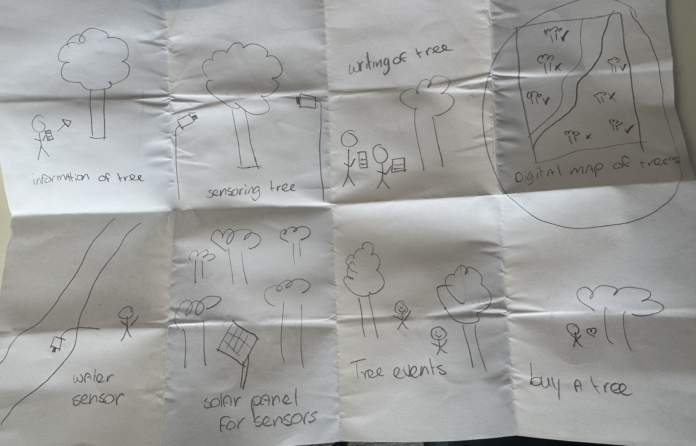
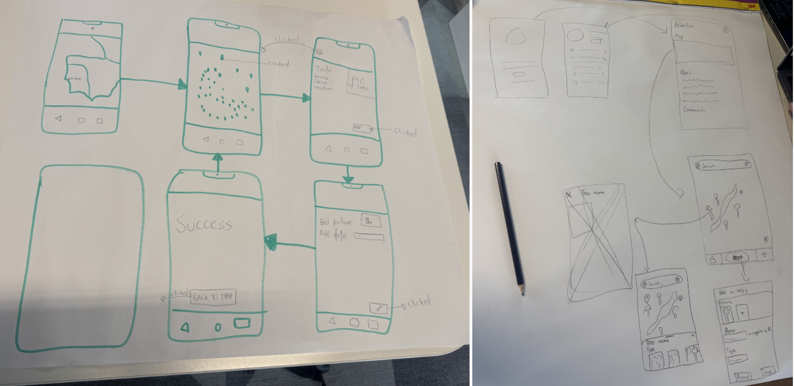

Human Centered
Design
✦ Eindhoven, Netherlands · February–April 2026
Research & Discovery
Deliverables
- Research document
- Stakeholder analysis
Why
In the empathise phase it was important that my group and I built a solid understanding of our stakeholders' problems and honestly, as someone who didn't even know what an arboretum was before this, this part was crucial for me personally. Having a good research document we could look back on as we continued through the other phases of design thinking was also really important, rather than jumping straight to solutions without a proper foundation.
How
I helped think along for the main research question and from there I created five sub-questions to help answer it. We used the DOT framework, mainly focusing on literature research. I noticed pretty quickly that things were getting a bit vague and our questions were all over the place, so I decided to create a research plan document to keep everything structured. In this I mapped out which areas I wanted each teammate to focus on, and took on the role of Research Synthesizer myself. This meant I was responsible for looking across all the research and finding answers to questions like: what patterns appear, where do user needs and cost constraints conflict, what gaps exist in current solutions, and what is the core unmet need?
What
I wrote and put together the full research document, combining all my teammates' findings into one final conclusion. This gave our whole team a solid, shared understanding of the problem space to move forward with into the define phase.
Add your research plan info here.
Why
Understanding the needs, goals, pain points and concerns of each stakeholder was essential before we could make any design decisions. Knowing who we were designing for and what they actually struggled with meant we could prioritize the right things later in the process rather than guessing.
How
We did this together as a group on the whiteboard, researching and filling in the analysis in real time. We ended up analyzing multiple stakeholders including citizen scientists and the Toronto Region Conservation Authority. I participated in the session and contributed to identifying and mapping out each stakeholder's role, goals and pain points.
What
A stakeholder analysis mapping out the roles, goals and pain points of multiple stakeholders including citizen scientists and the Toronto Region Conservation Authority.
So
Even though we ultimately did not move forward with the citizen scientists and the Toronto Region Conservation Authority that we analyzed, the exercise was still really valuable. Going through their perspectives gave us a much broader understanding of the project space and helped us make a more informed and confident decision about who to focus on. We ended up choosing the Humber Office of Sustainability as it is the most important stakeholder and public visitors as our secondary. We also had the chance to review all the other stakeholder analyses from the other teams and ended up using the public visitors analysis from a different team.

✦ Personas
Add your personas info here.
Insights & Synthesis
Deliverables
- Personas
- Project plan
Add your problem statement info here.
Why
Having a project plan helps our group understand the details of our project. Without it, everyone would have a different idea of what we are building, who we are building it for, and what success looks like. I wanted us to have one clear document we could all refer back to throughout the semester.
How
In our lectures I actively participated in shaping the Problem Statement Definition, working through what the Humber Office of Sustainability and public visitors actually need, and contributed to generating and refining our HMW questions. I also took the lead on structuring and writing the document itself, making sure everything flowed logically from the problem through to our chosen direction.
What
The result is a project plan with nine sections covering everything from the introduction and problem statements to the timeline and risk mitigations. It defines who we are designing for, what we are trying to solve, what the solution needs to do, and what could go wrong. It gave the whole De-Bug Gang a shared foundation to work from going into the next modules.
So
This is very much a living document. What we have now is a first draft that helped us get aligned at the start, but things will change as we move through the modules and learn more about the project. For example, as we get into the Software Engineering module our success criteria will likely need to be updated to reflect what we are actually building. So for now it is a bit open ended, but the most important thing was getting something solid down that the whole team could work from.
Add your affinity diagram info here.
Add your How Might We statements info here.
Why
After conducting our research and stakeholder analysis we had a solid understanding of who we were designing for, but we needed a way to bring that to life. Personas help translate research insights into a real, relatable person so that design decisions stay grounded in actual user needs rather than assumptions.
How
Creating personas was a task during one of Paul's lectures. My group and I started with a rough sketch of our first persona, brainstorming his background, goals, frustrations and motivations together. We then brought them to life by generating realistic profiles using AI, turning our rough ideas into fully fleshed out characters.
What
Three personas. Matthew Sterling, a 25 year old casual public visitor who wants quick and easy access to information. Laura Bennett, a 34 year old employee at the Humber Office of Sustainability who needs reliable, reportable data. And Fern Walker, a 58 year old retired forest ranger who is knowledgeable but still wants a simple and practical system.
So
The personas did not necessarily shift our thinking but they made everything a lot more concrete. Having three distinct people with different needs and frustrations in front of us made it much easier to map out what our tool actually needed to do and helped us prioritize the right features when we moved into building our MoSCoW table.


Ideation & Concept
Deliverables
- Brainstorming & Ideation
- Wireframes
- Concept document
- Concept presentation
Why
After defining the problem we started brainstorming ideas for a solution. In Paul's lecture we were encouraged to think freely, even if the ideas were never actually going to be used. It was all about getting creative without putting too much pressure on coming up with something perfect right away.
How
During the workshop we did two exercises. First the worst possible idea, where we came up with the most ridiculous solutions on purpose. Our personal highlight was suggesting unpaid interns to manually collect all the data in the arboretum. Then we did Crazy 8's, where we had to sketch a new concept every minute for eight minutes. It was hard because the ideas run out pretty fast, but that is kind of the point.
What
A set of rough concepts and sketches from both exercises, helping us explore a wide range of directions before narrowing things down.
So
The worst possible idea exercise was honestly more fun and useful than I expected. It got everyone loosened up and laughing, which made the Crazy 8's feel way less scary. The Crazy 8's were tough though, at some point your brain just goes blank. But that is also what makes it interesting because you end up coming up with stuff you would never normally think of. Some of those rough sketches ended up shaping our final concept direction.
These were my drawings from the Crazy 8's exercise.

Add your storyboard info here.
Why
Before jumping into a detailed prototype we needed to map out the basic structure and flow of our idea first. Low fidelity wireframes help you figure out where everything goes without getting distracted by details like colors or styling. It is a way to test the concept before investing too much time into it.
How
During a lecture exercise we presented a short concept pitch to another team, who then sketched a wireframe based on what we described. Another team did the same for us. We then used those sketches as a starting point to develop our own wireframes for the mobile app.
What
A set of low fidelity wireframes for our landscape health monitoring mobile app, mapping out the basic screens and flow before moving into a more detailed prototype.
So
Having the wireframes in place was really useful going forward with the prototype. It gave us a clear starting point and meant we were not figuring out the structure and the details at the same time. I personally also sketched the login page, which ended up being part of the final wireframe set.
The sketch on the left is from the other group's interpretation of our concept. The wireframe on the right is ours.

Add your concept document info here.
Add your concept presentation info here.
Prototype & Test
Deliverables
- Prototype
- Usability test plan
- Final presentation
Why
Before running our usability test we needed a clear plan to make sure we were testing the right things and heading in the right direction with our design. Without a structured plan we would just be testing randomly without knowing what we were actually trying to find out.
How
After Paul's lecture on usability testing I worked with my team to brainstorm two scenarios we wanted to test. I contributed to defining these scenarios and built out the plan using information from the lecture slides, with the help of AI to structure it properly.
What
A usability test plan with two test scenarios:
- Finding out whether users can find and view pictures and information for a landscape element without guidance
- Whether they can successfully add information for a new landscape element using the app
So
A lot of this was already familiar to me from previous experience, so the plan felt more like a refresher than something completely new. Going through it together as a team was where the real value was for me. The test gave us some small but useful tweaks to our design, like adding a confirmation pop up after adding a tree. We also observed some bigger pain points, like users struggling to find the map, which are things we still need to work on to make the overall app flow smoother.
Add your prototype info here.
What happened
When I arrived for the final presentation, one of my team members had created a different prototype they also wanted to present, based on a requirements document we had received but weren't really aware of before. It was a bit of a miscommunication on our end as a group. The presentation also didn't have a clear structure yet so we needed to sort that out before going in.
What I did
I brought it up with the team and we talked it through, we agreed to include our previous prototypes alongside it so the presentation reflected all the work we had actually done. I also suggested we use the design thinking structure we had been following the whole time to give it a proper flow. Since I'm the only designer in the group I also took care of making the slides look better and consistent with the rest of our documentation.
So
We did end up getting feedback on the new prototype too, which in hindsight makes sense. They had apparently finished it that morning, I just didn't know about it. That's really on all of us as a team though. If we had communicated better along the way we could have avoided the whole situation. It was a good reminder of how important it is to keep each other in the loop, especially towards the end of a project when everyone is in their own head trying to finish things.
Retrospective
Topics
- Group retrospective
- Personal reflection
Add your group retrospective here.
Add your personal reflection here.